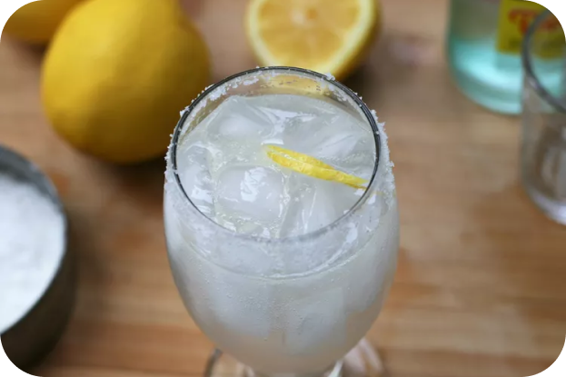

The Chilton cocktail, said to have originated in Lubbock, Texas, is a tangy and refreshing summer cocktail, perfect for those who don't like overly sweet drinks. Adjust the lemon and sparkling water to suit your taste.

1 tablespoon coarse salt, or as needed
1 lemon wedge
1 1/2 fluid ounces freshly-squeezed lemon juice
1 1/2 fluid ounces vodka
4 fluid ounces sparkling mineral water (such as Topo Chico®), or as needed
Sprinkle salt onto a plate. Moisten the rim of a highball glass with lemon wedge. Press the moistened rim into salt. Fill the glass with ice. Pour lemon juice and vodka over ice and gently stir. Top with sparkling water and serve with lemon wedge.